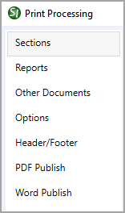

This command can also be executed from the SpecsIntact Explorer's Toolbar, Right-click menu, or by using the keyboard shortcut Ctrl+P.
The Print Processing window is a versatile, multi-functional window that gives you control over your final output. Not only can you process and view your processed files, but you can print the processed files or seamlessly publish them to Microsoft Word or PDF through the integrated SpecsIntact PDF or Adobe PDF printers. Additionally, it includes the processing reconciliation functions, offering direct access to valuable quality assurance reports to help assure the quality of your finished specifications, which is key to completing your project successfully, before committing them to paper.
 To customize and set your standard print output, simply adjust the desired settings. Once you've made your selections, click the Save Settings button. This will lock in your selections, applying them to the current print output, ensuring they are used for all future generated print output, while providing consistent results. You can update and save these settings whenever necessary. Additionally, you have the flexibility to make one-time selections without saving those changes permanently.
To customize and set your standard print output, simply adjust the desired settings. Once you've made your selections, click the Save Settings button. This will lock in your selections, applying them to the current print output, ensuring they are used for all future generated print output, while providing consistent results. You can update and save these settings whenever necessary. Additionally, you have the flexibility to make one-time selections without saving those changes permanently.
 When printing previously Processed (*.prn) files directly from the SpecsIntact Explorer's Processed Files folder, the Print Processing window will only display the Options, Header/Footer, PDF Publish, and Word Publish tabs. Additionally, it's worth noting that the Other Documents tab will not appear if the project doesn't contain any other documents.
When printing previously Processed (*.prn) files directly from the SpecsIntact Explorer's Processed Files folder, the Print Processing window will only display the Options, Header/Footer, PDF Publish, and Word Publish tabs. Additionally, it's worth noting that the Other Documents tab will not appear if the project doesn't contain any other documents.
 Click the tabbed commands on the image below to see how to use each function.
Click the tabbed commands on the image below to see how to use each function.

Process and Print/Publish common controls
The common controls for Process and Print/Publish appear consistently across all tabs, providing a unified experience.

- Printer - Provides the option to select a different printer while displaying the printer details. The last selected printer becomes the application's default printer.
- Setup button - Opens the Print Setup window, making it simple to choose your preferred printer, define the paper Size, Source, and Orientation, and even access networked printers. The Properties button allows you to change options based on the selected printer, such as the number of copies to be printed and to enable duplex or color printing, etc.
- Process & Publish / Process & Print button - Processes the Sections and applies the selections made on each tab, then sends a copy to the selected printer (e.g., hard copy or PDF).
- Process Only button - Processes the Sections, applies your selections, and saves the results to the project's Processed Files folder for your review.
- Save Settings button - Saves selections made on each tab, except for Sections chosen for processing and printing. The next time the Print Processing window is opened, the saved selections will automatically be the new defaults (e.g., Reports, Options, Header/Footer, etc.). When saving settings that are used frequently, make those specific selections first, click the Save Settings button, and then make the additional selections you need but do not want to save as permanent defaults.
- Reset Settings button - Restores any custom selections on the tabs back to the default settings.
Standard Windows Commands
 The Cancel button will close the window without recording any selections or changes entered.
The Cancel button will close the window without recording any selections or changes entered.
 The Help button will open the Help Topic for this window.
The Help button will open the Help Topic for this window.
Additional Learning Tools
 Watch all of the eLearning modules within Chapter 4 - Process and Print/Publish and Chapter 6 - Correcting QA Report Errors and Discrepancies.
Watch all of the eLearning modules within Chapter 4 - Process and Print/Publish and Chapter 6 - Correcting QA Report Errors and Discrepancies.